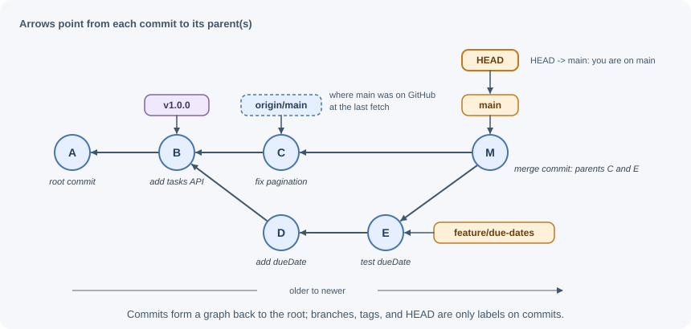
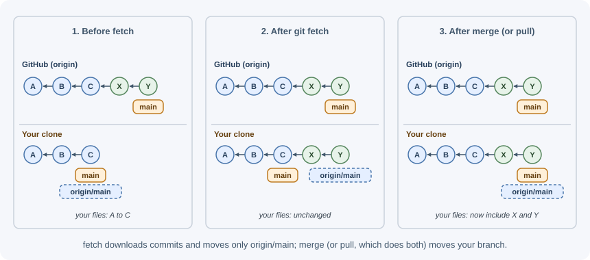

Git Fundamentals and Internals¶
Git looks like a collection of commands, but underneath it is a small, elegant data model: a content-addressed object database plus a set of named pointers into it. Once you understand that model, commands that seem magical (branching, merging, rebasing, resetting, recovering "lost" work) become predictable consequences of moving pointers around a graph.
This lesson explains how Git stores snapshots, how objects are named by
their hashes, what refs, HEAD, and the index really are, how commits
form a graph, how packfiles keep repositories small, and how remotes and
remote-tracking branches work. You will explore a real repository with
git cat-file and git ls-tree along the way.
Why it matters¶
Most Git confusion comes from a wrong mental model: thinking a branch is a
folder copy, that commits store diffs, or that git pull is a simple
download. These models break down exactly when it matters, during a
conflicted merge, a botched rebase, or an urgent recovery. Engineers who
understand the object model can answer questions like "is my work really
gone?", "why did this push get rejected?", or "why is our clone 4 GB?"
quickly and safely. The internals are also the foundation for everything
that builds on Git: CI systems check out commits by hash, deployments are
traced to a commit SHA, and release tooling reads tags and history.
Real-world usage¶
- The Linux kernel. Git was written by Linus Torvalds in 2005 for Linux kernel development after the project lost access to its previous tool; the Pro Git history chapter lists its design goals: speed, simple design, strong support for thousands of parallel branches, and a fully distributed model. The snapshot-and-hash design described here is what delivers those goals.
- GitHub engineering. The GitHub blog post Commits are snapshots, not diffs walks through the same object model (blobs, trees, commits) and shows how Git computes diffs on demand, which explains behaviors such as rename detection and why history rewriting creates new commit IDs.
- SHA-1 to SHA-256. In 2017 the SHAttered research produced the first practical SHA-1 collision. Git responded by hashing with collision detection and by designing a move to SHA-256, documented in Git's hash function transition plan. SHA-256 repositories are supported today, and Git's published plans for Git 3.0 make SHA-256 the default for new repositories.
Popular tools and providers: the Git command line, GitHub, GitLab, Bitbucket, Azure Repos, libgit2 and JGit (Git libraries embedded in IDEs and servers), and graphical clients such as GitHub Desktop and the source control panels in VS Code and JetBrains IDEs.
How it works¶
Snapshots, not diffs¶
Many older version control systems store a file's first version and then a chain of changes. Git instead records a snapshot of the whole project with every commit. That sounds expensive, but two tricks make it cheap:
- Every piece of content is stored once, named by the hash of its bytes. An unchanged file in the next commit has the same hash, so the new snapshot simply points to the existing copy.
- Objects are later compressed together into packfiles, where similar versions of a file are stored as deltas of each other.
Diffs are computed when you ask for them (git diff, git show), by
comparing two snapshots. This is why Git can show a rename it never
recorded: it notices that a removed file and an added file have very
similar content.
The four object types¶
Everything Git stores lives in the object database under
.git/objects. There are only four kinds of object:
| Object | Stores | Created by |
|---|---|---|
| Blob | The raw bytes of one file. No name, no permissions. | git add |
| Tree | One directory: a list of entries, each with a mode, type, hash, and name | git commit (from the index) |
| Commit | A pointer to one root tree, zero or more parent commits, author, committer, timestamps, and the message | git commit, git merge |
| Annotated tag | A pointer to another object (usually a commit), a tag name, the tagger, a message, and optionally a signature | git tag -a |
A tree entry's mode tells Git what the entry is: 100644 for a normal
file, 100755 for an executable, 120000 for a symbolic link, 040000
for a subdirectory (another tree), and 160000 for a submodule commit.
A filename lives in the tree, not in the blob, which is why two files with
identical content share one blob.
![Diagram: two commits from one repository; older commit 7bfe7ed points to root tree a657b86 and has no parent; newer commit c115592 points to root tree 0cb0692 and to its parent 7bfe7ed; HEAD contains ref: refs/heads/main, refs/heads/main contains c115592, and refs/tags/v1.0.0 points to annotated tag object af18ce9 which points to c115592; each root tree points to its own src subtree and app.js blob (7a8bc97 then dfcefac), while both root trees point to the same blobs for .gitignore and package.json because those files did not change.](../git-object-model.svg)
Content addressing: names are hashes¶
An object's name is the hash of its type, its size, and its content. For
a blob containing hello followed by a newline, Git hashes the bytes
blob 6\0hello\n:
printf 'hello\n' | git hash-object --stdin
# ce013625030ba8dba906f756967f9e9ca394464a
printf 'blob 6\0hello\n' | sha1sum
# ce013625030ba8dba906f756967f9e9ca394464a -
Every Git installation in the world computes the same name for the same content. This content addressing gives Git three properties:
- Deduplication: identical content is stored once, no matter how many files, directories, or commits contain it.
- Integrity: if a single bit of an object changes on disk, its hash no
longer matches its name, and
git fsckreports the corruption. - Tamper evidence: a commit hash covers its tree hash, which covers every blob and subtree hash, and its parent hashes, which cover all earlier history. Changing anything in the past changes every descendant commit's hash. This chain is a Merkle tree (more precisely, a Merkle DAG).
The default hash is SHA-1 (40 hexadecimal characters). Since the SHAttered collision in 2017, Git uses a hardened SHA-1 implementation that detects the known collision attack patterns. Git also supports SHA-256 repositories (64 hexadecimal characters):
git init --object-format=sha256 taskflow-sha256
git -C taskflow-sha256 rev-parse --show-object-format # sha256
SHA-256 support was added in Git 2.29 and is no longer labelled experimental, but SHA-1 and SHA-256 repositories cannot yet exchange objects with each other, and hosting services and tools must support the format. Check your hosting platform before creating one. Git's documented plans for Git 3.0 switch the default for new repositories to SHA-256; existing SHA-1 repositories keep working.
You rarely type full hashes: any unique prefix works, and Git prints at least 7 characters by default (more in large repositories).
Exploring a repository with plumbing commands¶
Git's commands are split into porcelain (friendly commands such as
commit and switch) and plumbing (low-level commands that scripts
and curious engineers use). Here is a tiny TaskFlow API repository with
two commits, explored with plumbing. The hashes below are real output
from this repository.
git cat-file -t HEAD # object type
# commit
git cat-file -p HEAD # pretty-print the commit object
# tree 0cb06922109a8f04db81bf4624cca1d9960b8d90
# parent 7bfe7eda1967d4cc66439f90d934b13566eee8b7
# author Ada Lovelace <ada@example.com> 1794564300 +0000
# committer Ada Lovelace <ada@example.com> 1794564300 +0000
#
# Create the Express app
git ls-tree HEAD # the root tree of that commit
# 100644 blob 713d5006dabfe2792c6ee1dbb4fdbdff2c44e304 .gitignore
# 100644 blob 1e7637db6064c79a959274780f73a883f1e69b3d package.json
# 040000 tree 523ce736b6d0b50927c955a9017254faa15342f0 src
git ls-tree HEAD~1 # the root tree of the parent commit
# 100644 blob 713d5006dabfe2792c6ee1dbb4fdbdff2c44e304 .gitignore
# 100644 blob 1e7637db6064c79a959274780f73a883f1e69b3d package.json
# 040000 tree 3fb9f4de81bd6da1f5558790cf2dd07c01508d68 src
git cat-file -p v1.0.0 # an annotated tag is its own object
# object c115592ebd421fdeef7d772e101d28907d339443
# type commit
# tag v1.0.0
# tagger Ada Lovelace <ada@example.com> 1794564300 +0000
#
# TaskFlow API 1.0.0
Notice what the second commit changed. Only src/app.js was edited, so
the commit created exactly four new objects: a blob for the new
app.js, a new src tree that lists it, a new root tree that lists the
new src tree, and the commit itself. The .gitignore and
package.json blobs are reused, with identical hashes in both trees. The
author line stores a Unix timestamp and a time zone offset, so the
commit hash also depends on when and by whom it was made.
Refs and HEAD¶
Hashes are not friendly, so Git keeps refs: names that point to objects.
| Ref | Example | Points to | Moves when |
|---|---|---|---|
| Local branch | refs/heads/main |
a commit | you commit, merge, reset, or rebase on it |
| Remote-tracking branch | refs/remotes/origin/main |
a commit | you fetch from origin |
| Tag | refs/tags/v1.0.0 |
a tag object or a commit | normally never |
HEAD |
.git/HEAD |
usually another ref | you switch branches |
A branch is just a ref under refs/heads/. Creating one writes a single
hash; that is why branching in Git is instant. With the default "files"
storage, a ref is a small file (or a line in .git/packed-refs); newer
Git versions also offer a binary "reftable" format that Git 3.0 plans to
make the default. Either way, the idea is the same: a name and a hash.
HEAD answers "what am I on?". Normally it is a symbolic ref that
names a branch:
cat .git/HEAD
# ref: refs/heads/main
git symbolic-ref HEAD
# refs/heads/main
When you commit, Git creates the commit with the current HEAD commit as
its parent and then moves the branch that HEAD names. HEAD itself
does not change, because it still names the same branch.
Detached HEAD means HEAD holds a commit hash directly instead of a
branch name. It happens when you check out a tag, a commit, or a
remote-tracking branch:
git switch --detach v1.0.0
cat .git/HEAD
# c115592ebd421fdeef7d772e101d28907d339443
git status
# HEAD detached at v1.0.0
Detached HEAD is safe for looking around and for building old versions
(CI systems often check out a detached commit). The danger is committing
there: the new commits belong to no branch, and once you switch away,
nothing points to them. They stay recoverable through the reflog until
garbage collection, but the simple fix is to create a branch before you
leave: git switch -c hotfix/login-timeout.
The index (staging area)¶
The index (.git/index) is a binary file listing every tracked path
with its mode, its blob hash, and cached file system metadata such as
size and modification time. It is the proposed next commit: git commit
turns the index into trees and a commit, not your working files.
git ls-files --stage
# 100644 713d5006dabfe2792c6ee1dbb4fdbdff2c44e304 0 .gitignore
# 100644 1e7637db6064c79a959274780f73a883f1e69b3d 0 package.json
# 100644 dfcefac908bf213230f5b45bd141706e6af843f3 0 src/app.js
The 0 is the stage number. During a merge conflict the index holds
up to three versions of a conflicted path: stage 1 (the common
ancestor), stage 2 (ours), and stage 3 (theirs). Resolving the conflict
and running git add collapses them back to stage 0.
The cached metadata is why git status is fast: Git compares file sizes
and timestamps first and only rehashes files that look changed.
![Diagram: three boxes for the working tree, the staging area (index), and the local repository; git add copies a file into the index, git commit records the index as a commit, and git commit -a stages tracked changes and commits in one step; going back, git restore file discards working-tree edits by copying from the index, git restore --staged file unstages by copying from HEAD into the index, and git switch branch rewrites the index and files to match the new HEAD; git diff compares working tree with index, git diff --staged compares index with HEAD, and git diff HEAD compares working tree with the last commit.](../git-three-areas.svg)
Staging exists so that a commit can contain exactly what you intend.
git add -p stages individual hunks, letting you split unrelated edits in
one file into separate, focused commits.
The commit graph¶
Each commit names its parents, so commits form a directed acyclic graph (DAG): arrows point backwards in time from child to parent and never form a loop. A normal commit has one parent, the first commit has none, and a merge commit has two (or more).

Because history is a graph, Git answers questions with graph operations. Revision syntax names commits relative to others:
| Syntax | Meaning |
|---|---|
HEAD~1, HEAD~3 |
The first parent, the third first-parent ancestor |
HEAD^2 |
The second parent of a merge commit |
main..feature |
Commits reachable from feature but not from main |
main...feature |
Commits on either side but not both (symmetric difference) |
@{u} |
The upstream of the current branch, for example origin/main |
HEAD@{2} |
Where HEAD was two moves ago (from the reflog) |
v1.0.0^{commit} |
The commit an annotated tag points to |
git log --oneline --graph --all --decorate # draw the graph
git merge-base main feature/due-dates # best common ancestor
git log main..feature/due-dates # what the PR would add
"Reachable" is the key word: a commit belongs to a branch if you can walk parent links from the branch tip to it. Commits that no ref can reach are unreachable and will eventually be deleted.
Loose objects, packfiles, and garbage collection¶
New objects are first written as loose objects: one zlib-compressed
file each, at .git/objects/<first 2 hex chars>/<remaining 38>. Thousands
of small files are wasteful, so Git periodically packs them:
git gc(also run automatically asgit gc --autoafter some commands) combines objects into a packfile (.pack) plus an index (.idx) for fast lookup. Inside a pack, similar objects are stored as deltas against each other, so 300 versions ofapp.jscost little more than one plus the changes.git gc --autoruns when there are more than about 6,700 loose objects (gc.auto) or too many packs (gc.autoPackLimit, default 50).- Unreachable objects are pruned only after a grace period (
gc.pruneExpire, two weeks by default), and reflog entries expire after 90 days, or 30 days for entries no longer reachable from the ref (gc.reflogExpire,gc.reflogExpireUnreachable). This is what makes recovery possible. git maintenance startschedules background tasks (prefetching, repacking, and updating the commit-graph file that speeds up history walks), which is useful for large repositories.
git count-objects -vH
# count: 11 <- loose objects before gc
git gc
git count-objects -vH
# count: 0
# in-pack: 11
# packs: 1
# size-pack: 2.20 KiB
Network transfers use the same format: git fetch and git push
negotiate which commits each side already has, then send a single pack
containing only the missing objects.
Remotes and remote-tracking branches¶
A remote is a named URL for another copy of the repository, usually
origin. Git does not talk to the remote unless you run fetch,
pull, push, or clone; everything else is local.
When you fetch, Git downloads missing objects and updates
remote-tracking branches such as origin/main, read-only refs that
record where the remote's branches were at the last fetch. The mapping
comes from the remote's refspec:
git config --get remote.origin.fetch
# +refs/heads/*:refs/remotes/origin/*
This reads: "for every branch on the remote (refs/heads/*), update my
refs/remotes/origin/* to match, even if that is not a fast-forward
(+)". Your local main and origin/main are different refs that can
point to different commits.
A local branch can have an upstream (its tracking branch), which lets
git status report how far apart they are and lets push and pull run
without arguments:
git branch -vv
# * main c115592 [origin/main: ahead 1, behind 2] Create the Express app
git rev-list --left-right --count main...origin/main
# 1 2
Fetch versus pull:
git fetchonly downloads commits and moves remote-tracking branches. Your branches, index, and files are untouched, so fetching is always safe.git pullrunsgit fetchand then integrates the upstream into your current branch, by merging (default) or rebasing (git pull --rebase, orpull.rebase=true). If your branch and the upstream have diverged and you have not configured a preference, recent Git versions stop and ask you to choose (pull.rebaseorpull.ff).

Many teams prefer git fetch followed by an explicit git merge or
git rebase, because you can inspect what arrived (git log
main..origin/main) before changing your branch.
When to use and when not to use¶
Use the porcelain commands for everyday work and reach for plumbing when you need to understand, script, or repair something:
| Task | Everyday command | Lower-level tool |
|---|---|---|
| See what a commit contains | git show <sha> |
git cat-file -p <sha>, git ls-tree |
| Script "which commit is deployed?" | git log -1 |
git rev-parse HEAD |
| List branches for a script | git branch |
git for-each-ref --format='%(refname:short)' refs/heads |
| Find what is making the repo large | (none) | git rev-list --objects --all with git cat-file --batch-check |
| Check repository health | (none) | git fsck |
Git itself is the right tool for source code, configuration, and text documents. It is a poor fit for:
| Content | Why | Better choice |
|---|---|---|
| Large binaries (videos, datasets, design files) | Every version stays in history forever and cannot be delta-compressed well | Git LFS or object storage |
| Secrets and credentials | History is copied to every clone and is hard to purge | A secrets manager |
Build output and dependencies (dist/, node_modules/) |
Regenerable, noisy, and conflict-prone | .gitignore plus CI artifacts |
| Databases and frequently rewritten binary files | Merges are impossible and history balloons | Backups and migrations |
Practical examples¶
Build a commit by hand with plumbing¶
This shows that git commit is only a convenience over four plumbing
steps:
# Run in an empty scratch directory
git init -b main plumbing-demo && cd plumbing-demo
# 1. Store a blob and get its hash
BLOB=$(printf '# TaskFlow API\n' | git hash-object -w --stdin)
# 2. Put it in the index under a path and mode
git update-index --add --cacheinfo 100644,"$BLOB",README.md
# 3. Turn the index into a tree object
TREE=$(git write-tree)
# 4. Create a commit object for that tree, then point main at it
COMMIT=$(echo "Add README" | git commit-tree "$TREE")
git update-ref refs/heads/main "$COMMIT"
git log --oneline # fd36d15 Add README (hash varies with author and time)
git status --short # D README.md: the file exists only in Git, not on disk
git restore README.md # materialize it from the index
The commit exists, but the file was never written to the working tree. That is the separation between the object database, the index, and the working tree made visible.
Find the largest objects in history¶
When a clone is slow, find out what is taking the space:
# Every object in history with its type and size, largest first
git rev-list --objects --all |
git cat-file --batch-check='%(objecttype) %(objectname) %(objectsize) %(rest)' |
awk '$1 == "blob"' |
sort -k3 -n -r |
head -10
The last column is the path where the blob was found. Large blobs that no longer exist in the current tree still cost every clone; the fix (Git LFS or rewriting history) is covered in hooks, .gitignore, and large repositories and undoing mistakes and recovery.
Inspect where you are relative to the remote¶
git fetch --prune # update origin/* and drop deleted branches
git status -sb
# ## feat/task-due-dates...origin/feat/task-due-dates [ahead 2]
git log --oneline origin/main..HEAD # my commits not yet on main
git log --oneline HEAD..origin/main # new commits on main I do not have
git diff origin/main...HEAD # changes since my branch left main
The three-dot diff compares against the merge base, which is exactly
what a pull request shows.
Sensible global defaults¶
# ~/.gitconfig
[init]
defaultBranch = main # name for new repositories
[pull]
rebase = true # pull = fetch + rebase, no surprise merge commits
[fetch]
prune = true # remove origin/* refs for deleted branches
[push]
autoSetupRemote = true # first push of a new branch sets its upstream
[merge]
conflictStyle = zdiff3 # show the common ancestor in conflict markers
[rerere]
enabled = true # remember and reuse conflict resolutions
[diff]
algorithm = histogram # often clearer diffs than the default
Each line is a real Git setting: init.defaultBranch (Git 2.28 and
later), push.autoSetupRemote (Git 2.37), and merge.conflictStyle =
zdiff3 (Git 2.35). Teams that prefer merge-based pulls set
pull.rebase = false or pull.ff = only instead; the important thing is
choosing deliberately.
Best practices¶
- Learn the model: snapshots, four object types, refs, and the graph. Most "Git problems" are pointer questions.
- Commit small, coherent snapshots; use
git add -pto keep unrelated changes apart. - Fetch often and look before you integrate (
git log main..origin/main). - Configure
pull.rebaseorpull.ffexplicitly sogit pullnever surprises you. - Create a branch before committing on a detached
HEAD. - Keep large binaries, generated files, and secrets out of history from the start; removing them later means rewriting history.
- In scripts and CI, use plumbing commands (
rev-parse,for-each-ref,cat-file) whose output is stable, not porcelain output meant for humans. - Record the commit SHA in every build artifact so you can always trace production back to an exact snapshot.
In production¶
- Clones and CI checkouts take minutes and
.gitis several gigabytes. Detect:git count-objects -vHshows a largesize-pack; the largest-objects script above lists big blobs. Cause: binaries, datasets, or build output committed in the past; deleting them in a new commit does not shrink history. Fix: move such files to Git LFS, rewrite history withgit filter-repoif the size is unacceptable, and use shallow or partial clones in CI. - A developer's commits "disappeared" after switching branches.
Detect:
git reflogshows commits made whileHEAD detached at <sha>. Cause: work committed on a detachedHEADthat no branch points to. Fix:git switch -c recovered <sha>from the reflog entry, and teachgit switch -cbefore committing on a checked-out tag. - The release job fails with
fatal: No names found, cannot describe anything. Detect:git describeor a version script fails only in CI. Cause: CI checkouts are shallow (actions/checkoutfetches one commit by default) and contain no tags. Fix: setfetch-depth: 0(full history and tags) on the checkout step, only in the jobs that need history;fetch-tagsalone helps only when the built commit is tagged. git pushis rejected with "non-fast-forward". Detect: the push error andgit statusshowingahead 1, behind 3. Cause: someone pushed to the same branch; your branch and the remote have diverged. Fix:git fetch, then rebase or merge ontoorigin/<branch>and push again. Never "fix" this with--forceon a shared branch.- Developers see branches that were deleted on GitHub weeks ago.
Detect:
git branch -rlists many staleorigin/*refs. Cause: fetch does not delete remote-tracking refs by default. Fix:git fetch --prune, or setfetch.prune = trueglobally. git fsckreports missing or corrupt objects. Detect: errors such aserror: object file ... is emptyormissing blob. Cause: a crash or full disk during a write, or a damaged file system. Fix: keep the broken copy for analysis, then re-clone or fetch the missing objects from a healthy remote; because objects are named by hash, any good copy is a valid replacement.
Important terminology¶
- Blob: An object holding one file's content, without its name.
- Tree: An object listing a directory's entries (mode, type, hash, name).
- Commit: An object pointing to a root tree and its parent commits, with author, committer, and message.
- Annotated tag: An object that names and describes another object, usually a release commit.
- Content addressing: Naming data by the hash of its content, so identical content has an identical name.
- Ref: A name that points to an object, such as
refs/heads/main. - HEAD: The ref that says what is checked out, usually pointing to a branch.
- Detached HEAD:
HEADpointing directly at a commit instead of a branch. - Index (staging area): The file that holds the proposed next commit.
- DAG: Directed acyclic graph; the shape of commit history.
- Reachable: A commit that can be found by walking parents from some ref.
- Packfile: A compressed file containing many objects, often stored as deltas.
- Remote-tracking branch: A read-only ref such as
origin/mainrecording a remote branch's position at the last fetch. - Upstream: The remote-tracking branch a local branch is configured to follow.
- Plumbing / porcelain: Low-level, script-friendly commands versus user-facing ones.
Common mistakes and misconceptions¶
- Believing commits store diffs. They store snapshots; diffs are computed on demand.
- Believing a branch contains commits. A branch is a pointer; commits are reachable from it.
- Thinking
git fetchchanges your files. It only updates remote-tracking branches; commands such asmerge,rebase,pull,switch,checkout,restore,reset,stash,cherry-pick, andrevertare the ones that change the working tree. - Thinking a deleted file is gone from the repository. It remains in every earlier snapshot.
- Using
git pullwithout knowing whether it merges or rebases. - Committing on a detached
HEADand switching away without creating a branch. - Assuming short hashes are permanent identifiers; a prefix that is unique today may become ambiguous as the repository grows. Store full hashes in deployment records.
- Parsing porcelain output (
git status,git branch) in scripts instead of using plumbing or--porcelainformats.
Revision questions¶
- Why can Git store a full snapshot on every commit without the repository growing by the full project size each time?
- You edit only
src/routes/tasks.js(wheresrc/routes/sits insidesrc/) and commit. How many new objects does the commit create, and which ones? (Answer: five: the new blob, thesrc/routestree, thesrctree, the root tree, and the commit.) - What exactly is stored in
.git/HEADwhen you are onmain, and what changes when you check outv1.0.0? - Why does changing a commit message deep in history change the hash of every later commit?
- What is the difference between
main,origin/main, and themainbranch on GitHub? - What does
git pulldo when your branch and its upstream have diverged, and how do you control it? - When are unreachable commits actually deleted, and why does that delay matter for recovery?
- What are stages 1, 2, and 3 in the index, and when do they appear?